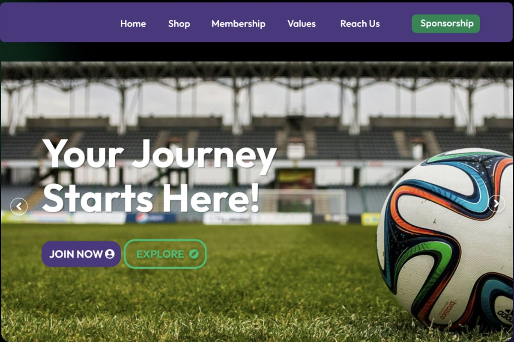
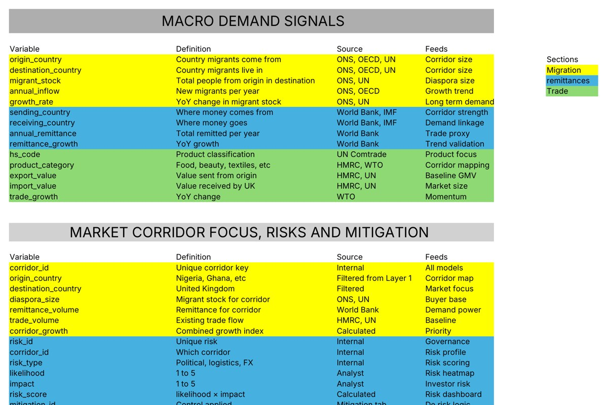

Technical Business Analyst with global enterprise experience in business systems and operations.
At SAP Emarsys I worked inside a global revenue operation. I owned Salesforce data integrity through a merger, across 7 global regions and a pipeline that more than 100 sales reps and their leaders relied on.
I understand how business systems and operations fit together: CRM, forecasting, data quality, governance and the reporting that leadership runs on. I take an unclear problem, scope it, build the system and stay with it until it works.
- Enterprise scaleSAP Emarsys revenue operations across 7 global regions
- Business systemsSalesforce, SQL, Excel, Python, Power BI
- DeliveryRequirements, stakeholder management, prototyping, handover
- FoundationFirst Class BSc Computer Science, Oracle certified in Generative AI
Work

Football club website
From a first stakeholder call to a reviewed prototype: 49 requirements gathered, scoped and traced through to design.

Trade corridor data model
A governed data model for cross border trade: 29 defined fields, 2,616 visa records and a schema that a new market can reuse.
About
- Experience Four years across business analysis, revenue operations and data
- Previously Revenue Operations Analyst at SAP Emarsys, London
- Education BSc Computer Science, First Class Honours, Coventry University
- Certified Oracle Cloud Infrastructure Generative AI Professional
- Tools Salesforce, SQL, Excel, Python, Power BI, Figma
- Contact Message me on LinkedIn